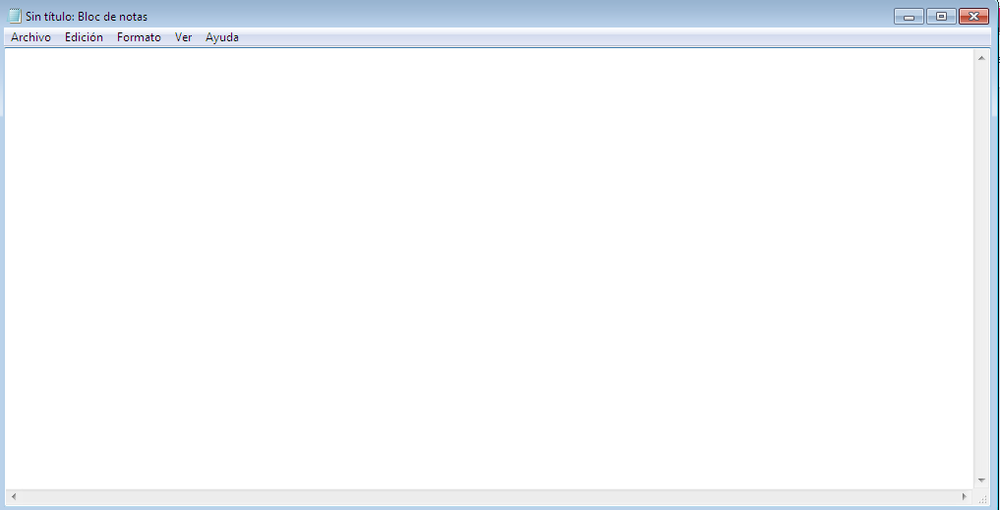
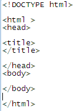
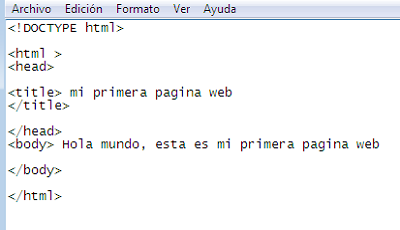
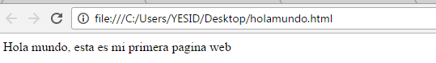

1. Crea tu Primera Pagina Web
1. Ve al boton Inicio
2.Te diriges a accesorios
3.Seleccionas el Bloc de Notas
Se abrirá el Bloc de Notas
4.Crea el esqueleto de la Pagina
6.Lo guardas
7. Le das un nombre, en este caso (holamundo)
8. Lo seleccionas como formato HTML
9. Agregar contenido en la página
10. Guardas
11. Seleccionas el archivo HTML que guardastes
Vemos que se muestra en el navegador y Ya tienes tu primer sitio Web